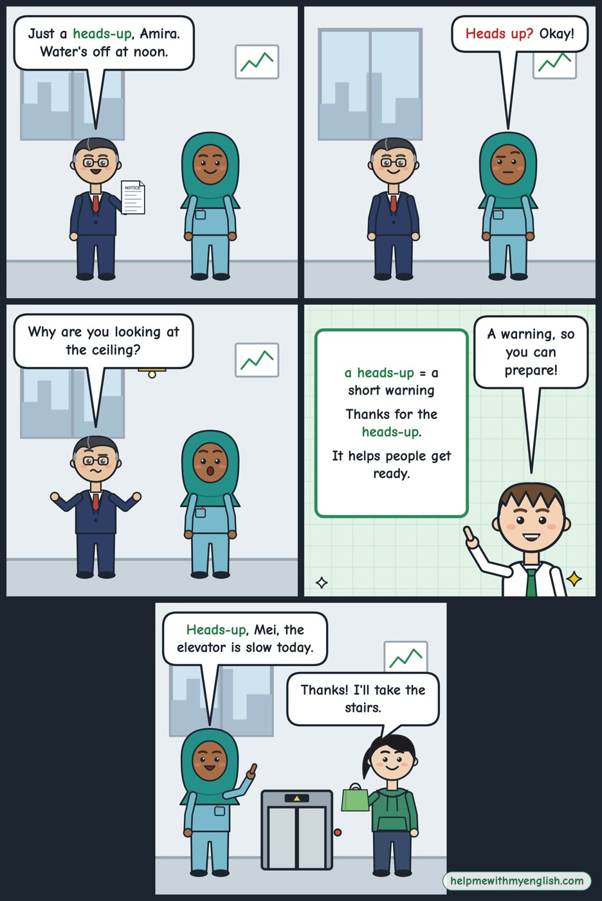

a heads-up
A short warning about something that will happen soon.
Thanks for the heads-up. I'll leave early.
Tip: Say 'a heads-up' with 'give someone a heads-up' or 'thanks for the heads-up'; it is a countable noun, so don't say 'a heads-ups'.
Hear it in conversation
Workbook
1. What does it mean?
In this conversation, what does a heads-up mean?
2. Fill the gap
I only found out about the road closure because my neighbour gave me a yesterday.
3. Choose the best reply
Amira: The train company just texted me that our platform is changing, so I thought I'd let you know.
4. Your turn: speak
Tell me about a time when someone warned you about something before it happened. How did it help?
Show an example answer
Last month my manager gave me a heads-up that a big client was visiting the office on Friday. Because of that, I tidied my desk and prepared my presentation early. I was really glad to have the warning, because otherwise I would have been very stressed.
Answer key: a heads-up
- 1. B. A short warning about something that is going to happen soon
- 2. heads-up
- 3. C. Thanks for the heads-up. I'd have gone to the wrong one.
- 4. Example: Last month my manager gave me a heads-up that a big client was visiting the office on Friday. Because of that, I tidied my desk and prepared my presentation early. I was really glad to have the warning, because otherwise I would have been very stressed.
See it in a comic
